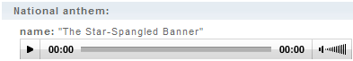

The World Factbook's World entry. The World Factbook's World entry.
|
|
The right side of each Factbook entry (termed a field) displays a Field Listing button, which takes users to a complete list of all the entries in that particular field. A Field Listing displays this information for all countries in alphabetical order. |
 Use
this button to download the data you are viewing. Use
this button to download the data you are viewing.
|
|  |
For countries with an available sound file, use the play button (far left) to hear the national anthem. |
|
| |
The Regional and World Maps page contains a variety of JPG and PDF maps, by geographic region, covering the entire globe. Also available are World maps, a World Oceans map, and a Time Zone map.
  |
Access through the Reference tab > Regional and World Maps OR
the 'Regional and World Maps' button on the home page. |
The Flags of the World page houses color images of national flags. Clicking on the Flag button will display a larger image of the flag, in a new window, accompanied by a description. The country button links to the country entry.
|
|
|
Access through the Reference tab > Flags of the World OR the 'Flags of the World' button on the home page. |
| Note that the same large flag file and description is accessible by clicking on the small flag image in a country entry. |
| The Gallery of Covers page displays all the front and back cover designs of The World Factbook since 1981. Clicking on the image displays a larger version. The buttons underneath the large cover image allow users to scroll through the different covers. |
 |
|
Access through the References tab > Gallery of covers. |
The Definitions and Notes page is an alphabetical listing of terms used in the Factbook and their definitions.
Use the Alphabet in the top right corner to jump to a specific section based on the first letter of the term.
The right side of each Factbook entry (termed a field) displays a Field Listing button, which takes users to a complete list of
all the entries in that particular field (see example below).

|
Access through the References tab > Definitions and Notes OR simply click
on any hyperlinked field title in any country entry. |
The Guide to Country Profiles page is a listing of all of the fields that can possibly appear in a country
entry. For most fields, if no information is available that field will NOT show up in the Country Profile. Clicking on the
fields in the Guide to Country Profiles will bring you to the definition of that field OR an NA will appear. The right side of each Factbook entry (termed a field) displays a Field Listing button, which takes users to a complete list of all the entries in that particular
field.

|
Access through the References tab > Guide to Country Profiles |
The Guide to Country Comparisons lists all of the fields that contain rankings, comparing country to country. Clicking on the field name links to the rank order page. Clicking on a country name in the sorted list jumps to the country page.
  |
Access through the References tab > Guide to Country Comparisons
OR the button on the home page OR the underlined numbers included in select fields. |
Not all Country Comparisons include the same number of entries because information for a particular field
is not available for all countries. In addition, not all data fields are suitable for displaying as Country Comparisons, such
as those containing textual information. Textual information is more readily viewed by clicking on the Field Listing button next to the Factbook entry title.
 All of the Country Comparisons pages can be downloaded as tab-delimited data files and can be opened in
other applications such as spreadsheets and databases. To save a Country Comparisons page in a spreadsheet, first click on the "Download
Datafile" choice above the Country Comparisons page you selected; then, at the top of your browser window, click on "File"
and "Save As." After saving the file, open the spreadsheet, find the saved file, and "Open" it.
All of the Country Comparisons pages can be downloaded as tab-delimited data files and can be opened in
other applications such as spreadsheets and databases. To save a Country Comparisons page in a spreadsheet, first click on the "Download
Datafile" choice above the Country Comparisons page you selected; then, at the top of your browser window, click on "File"
and "Save As." After saving the file, open the spreadsheet, find the saved file, and "Open" it.

A: Abbreviations This handy appendix provides definitions for
all the abbreviations found in the Factbook. Abbreviations may be acronyms or shortened titles and terms. Use the alphabet
in the top right to navigate to the abbreviation you are looking for.
|
 |
Access through the Appendices tab > A: Abbreviations. |
B: International Organizations and Groups Appendix B contains
descriptions of International Organizations and groupings of countries. The text describes the purpose or the parameters of
the group or organization, and provides a list of member states. Use the alphabet in the top right.
|
|
Access through the Appendices tab > B: International Organizations and
Groups. |
C: Selected International Environmental Agreements This appendix
outlines the objectives and parties involved in a select number of Environmental Agreements. Also listed are the important
dates relating to signature and enactment. Use the alphabet in the top right to navigate.
|
|
Access through the Appendices tab > C: Selected International Environmental
Agreements. |
D: Cross-Reference List of Country Data Codes A one stop shop
for the various codes used to identify countries; includes Geoploitical Entities and Codes (formerly FIPS PUB 10), ISO 3166, STANAG 1059, and Internet. The definitions for
the different codes reside at the top of the page. Use the alphabet in the top right to navigate. The country names are hyperlinks
that jump directly to a country's page.
|
|
Access through the Appendices tab > D: Cross-Reference List of Country
Data Codes. |
E: Cross-Reference List of Hydrographic Data Codes This appendix
is similar to Appendix D except the codes relate to the Oceans and Seas of the World.
|
Access through the Appendices tab > E: Cross-Reference List of Hydrographic
Data Codes. |
F: Cross-Reference List of Geographic Names Appendix F is
a compilation of the various names (current and former) used to refer to geographic areas, countries, regions, cities, etc.
Also included are the coordinates of the listed geographic name. Use the alphabet in the top right to navigate.
|
|
Access through the Appendices tab > F: Cross-Reference List of Geographic
Names. |
G: Weights and Measures Charts of unit conversions and mathematical
notations may be found here.
|
Access through the Appendices tab > G: Weights and Measures. |
|